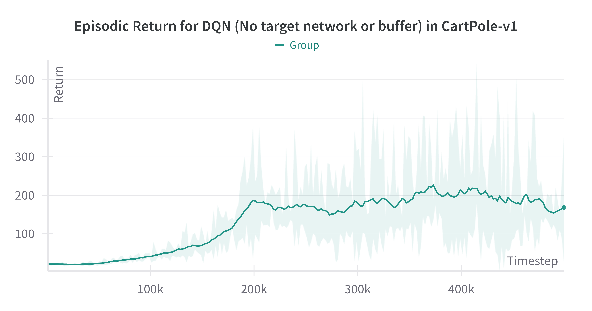
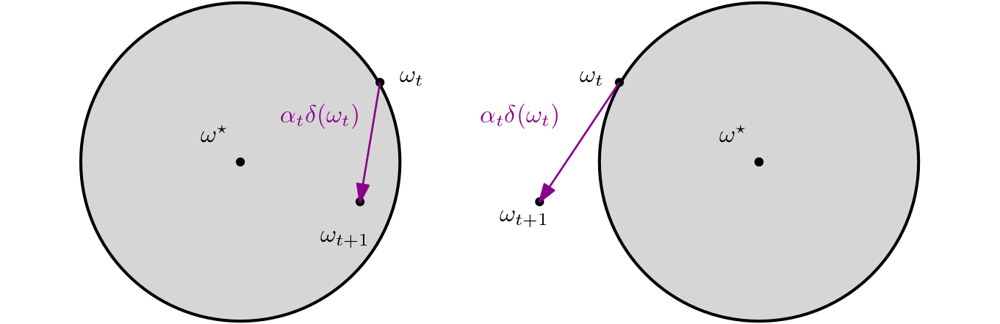

*This blog summarises work spanning two papers in collaboration with Matthew J.A. Smith (Whiteson Research Lab (WhiRL), University of Oxford), Matteo Gallici (Universitat Politècnica de Catalunya), Benjamin Ellis (Foerster Lab for AI Research (FLAIR), University of Oxford), Bartomeu Pou (Barcelona Supercomputing Center), Ivan Masmitja (Institut de Ciències del Mar), Shimon Whiteson (Whiteson Research Lab (WhiRL), University of Oxford), Jakob Nicolaus Foerster (Foerster Lab for AI Research (FLAIR), University of Oxford) and Mario Martin (Universitat Politècnica de Catalunya).
See below for citations.
Overview
Since their introduction by Rich Sutton in 1988 [Sutton, 1988], temporal difference (TD) methods have become the cornerstone of modern reinforcement learning (RL) algorithms.
Given TD's ubiquity, it often comes as a surprise to many researchers that TD is not an inherently stable algorithm when used in the context of deep RL.
What's more surprising is that until recently, a full formal understanding of why the tricks used to stabilise TD in practice actually work has been missing.
In this first blog of a two-part series, we take a deep dive into understanding the challenges faced when developing stable TD algorithms and introduce a powerful tool to formally characterise TD's instability mathematically.
Our goal is for the reader to understand the answers to the following two questions in detail:
I. Why is TD so unstable?
Because it is not a gradient of any objective.
II. Can we understand this instability mathematically?
Yes! Using the Jacobian.
Prerequisites: We assume familiarity with a Markov decisions process (MDP) defined as:
\begin{equation*}
\mathcal{M} \coloneqq \left\langle \mathcal{S},\mathcal{A},P_0, P_S(s,a), P_R(s,a), \gamma\right\rangle,
\end{equation*}
where \mathcal{S} and \mathcal{A} are the state and action spaces, P_0 is the initial state distribution, P_S(s,a) and P_R(s,a) are the state transition and reward distributions and \gamma is a discount factor.
In addition, we also assume some familiarity with the Fundamental Theorem of Calculus, vector calculus and linear algebra.
We'll admit, this blog is particularly mathematical. However we have tried to make it as accessible as possible for less theoretically inclined readers. For readers who wish to skip its contents and just understand our stable parallelised deep Q-learning algorithm (PQN) from a practical perspective, we have a separate blog here.
Doesn't TD Work Fine? Why Should we Care?
Without additional features such as a replay buffer, target networks or normalisation layers, raw TD is a very unstable algorithm when used for deep RL.
To demonstrate this, we run CleanRL's DQN [Huang et al., 2021] with the target network and replay buffer removed and evaluate on Cartpole V1 over 5 seeds:
Figure 1: ClearnRL's DQN without a target network and replay buffer in Cartpole V1.

As we can see from Figure 1, even in the simplest domains, DQN is pretty unstable without target networks and replay buffers.
This is no coincidence; indeed there exist known counterexamples demonstrating that TD is provably divergent for nonlinear function approximators and/or off-policy data [Baird, 1995, Tsitsiklis et al., 1997].
This combination of bootstrapping, off-policy data and function approximation became known the 'deadly triad' [Sutton and Barto, 2018] and seemed to be a fatal blow for the practical application of TD algorithms like Q-learning.
DQN [Mnih et al., 2015] was a huge breakthrough for RL researchers, demonstrating for the first time that RL had the potential to break the deadly triad and solve real world problems.
However, the question of stability has not been completely resolved: In the post-DQN era, TD now seems to work across many simulated domains, but a formal proof of convergence remains illusive. From an AI safety perspective, something seeming to work is still not good enough.
For example, if an RL practitioner makes the (questionable) choice of applying RL to financial markets, they must be completely certain there exist no environments or situations that could cause their algorithm to diverge, especially when an algorithm unpredictably diverging has the potential to destabilise an economy.
Moreover, all of the tricks needed to stabilise DQN (target networks and large replay buffers) can make it unnecessarily computationally expensive, especially for practioners with modest computational budgets.
A rigorous understanding of TD is essential before algorithms can be deployed in the real world.
The Goal of TD
To understand TD's specific convergence challenges, we first revisit the problem that TD is trying to solve. Learning (action-)value functions is a core component of many RL algorithms. In this blog we will study action-value (or Q-)functions, but all our results apply to value functions too.
To yield a tractable algorithm for learning Q-functions, a common approach approach is to introduce a parametric function approximator Q_\omega(s,a) parametrised by a set of n-dimensional parameters \omega\in \Omega\subseteq \mathbb{R}^n.
Each \omega can be understood as indexing a particular function in a function space and our goal should be to find the one that best represents the true Q-function.
Formally, if we can find a parameterisation \omega^\star\in\Omega such that Q_{\omega^\star}(s,a)=\mathcal{B}[Q_{\omega^\star}](s,a) where \mathcal{B}[Q^\pi](s,a) is the Bellman operator:
then by definition Q_{\omega^\star}(s,a)=Q^{\pi}(s,a) is a Q-function. To measure similarity between the two functions Q_{\omega}(s,a) and \mathcal{B}[Q_{\omega}](s,a), we use the \ell^2-norm, which is commonly known as the the mean squared Bellman error (MSBE) in the RL literature:
\begin{equation*}
\textrm{MSBE}(\omega)\coloneqq\left\Vert Q_{\omega}- \mathcal{B}[Q_{\omega}]\right\rVert^2_{d^\mu}=\mathbb{E}_{s,a\sim d^\mu(s,a)}\left[ (Q_{\omega}(s,a)- \mathcal{B}[Q_{\omega}](s,a))^2\right],
\end{equation*}
where d^\mu is a sampling distribution over the state-action space and \mu is known as the sampling policy, which may be different from the target policy \pi (for example, \mu is typically an exploration policy).
Minimising the MSBE thus provides a tractable and intuitive objective for learning Q-functions.
From experience with supervised learning, we might be tempted to apply stochastic gradient descent (SGD) to minimise the MSBE, however taking gradients reveals a serious flaw with this approach when applied to model-free RL:
To obtain an unbiased estimate of this term, which is required by SGD, we need to obtain two samples from the underlying state-transition distribution.
One for the first term in the product s'\sim P_s(s,a) and one for the second term in the product s''\sim P_s(s,a).
In model-free RL, this requires returning to state s to obtain a second sample.
For most MDPs of interest, an agent cannot arbitrarily set the state it is in and so obtaining two state-transition samples is not possible.
This is formally known as the double sampling problem[Sutton and Barto, 2018] and prevents direct methods (methods that directly minimise the MSBE using SGD) from being applied in practice.
To get around this issue TD methods just ignore the problem, dropping the offending gradient term:
where samples are drawn from sampling distribution s_t,a_t\sim d^\pi, from the transition distribution s'_t\sim P_S(s_t,a_t) and the target policy a'_t\sim \pi(s'_t).
Informally, as the parameters aren't updated using gradients and so won't always point 'downhill' in terms of the MSBE, we cannot guarantee that, on average, each update causes the parameters to move towards a minima.
This provides a precise answer to our first question:
TD methods are fundamentally unstable because the TD update is no longer a stochastic gradient of the MSBE objective.
Characterising Stability
To explain TD's instability mathematically, we must first understand what parameter values we expect TD to converge to, if it is to converge at all.
We first introduce some notation. We define the TD error vector \delta(\omega_t,\varsigma_t) as:
where \varsigma_t\coloneqq (s_t,a_t,r_t,s_t',a_t') is all the random variables (i.e. state, action, reward, next state, next action) bunched together in a single random variable for notational convenience.
The TD update then becomes:
\begin{equation*}
\omega_{t+1}=\omega_t+\alpha_t \delta(\omega_t,\varsigma_t).
\end{equation*}
We denote any parameter value that TD converges to as \omega^\star, which is known as a TD fixed point.
By definition, if \omega_t=\omega^\star, then the expected value of the parameter one timestep into the future \omega_{t+1} should also be \omega^\star or else the parameter cannot have converged.
Formalising this mathematically, any \omega^\star must satisfy:
\begin{align*}
\omega^\star&=\mathbb{E}_{\varsigma_t}\left[ \omega_{t+1}\right],\\
&=\mathbb{E}_{\varsigma_t}\left[\omega^\star+\alpha_t\delta(\omega_t,\varsigma_t)\right],\\
&=\omega^\star+\alpha_t\mathbb{E}_{\varsigma_t}\left[\delta(\omega^\star,\varsigma_t)\right],\\
\implies \mathbb{E}_{\varsigma_t}\left[\delta(\omega^\star,\varsigma_t)\right]&=0\ \textrm{for all } \omega^\star.
\end{align*}
This gives us a key condition that all TD fixed points satisfy:
\begin{align*}
\omega^\star\in \left\{\omega \big\vert \mathbb{E}_{\varsigma}\left[\delta(\omega,\varsigma)\right]=0 \right\}.
\end{align*}
Hence to characterise convergence, an intuitive approach is to measure how close successive \omega_t's are to \omega^\star.
To measure closeness of \omega_t and \omega^\star, we use the (squared) \ell^2-norm between each vector, giving a notion of convergence:
\begin{align*}
\lim_{t\rightarrow\infty}\mathbb{E}\left[ \lVert \omega_t-\omega^\star\rVert^2\right]=0.\tag{1}
\end{align*}
It is worth pointing out that the convergence in Eq. (1) deals with the expected value of parameter updates, however TD updates are stochastic.
Using Markov's inequality we obtain a more intuitive notion of convergence:
\begin{equation*}
\lim_{t\rightarrow\infty} \mathbb{P}\left(\lVert \omega_{t}-\omega^\star\rVert^2\ge \epsilon\right) \le \frac{1}{\epsilon} \lim_{t\rightarrow\infty}\mathbb{E}\left[ \lVert \omega_t-\omega^\star\rVert^2\right] .
\end{equation*}\tag{2}
Inequality (2) tells us that if we can show the expected updates converge in \ell^2-norm as in Eq. (1), the updates will also converge in probability:
for any arbitrarily small \epsilon>0, the probability that \lVert \omega_{t}-\omega^\star\rVert^2 is greater than \epsilon can be made arbitrarily small with increasing t.
Intuitively, this means that \omega_{t} and \omega^\star become close with arbitrarily high probability as the algorithm progresses.
Our method for tackling the convergence proof will be to show that the expected updates are a contraction mapping.
Precisely, we want to show that for small enough stepsizes \alpha_t:
The hand-wavey reason for this is that as time progresses, the stepsizes will tend towards zero, that is \alpha_t\rightarrow 0, and so Ineq. 3 will eventually hold for all future timesteps.
This means every progressive update will get closer and closer to \omega^\star, characterising a regime of convergence.
The rate at which stepsizes must tend to zero to ensure convergence is governed by the Robbins-Munro [Robbins and Munro, 1951] conditions:
\begin{equation*}
\sum_{t=0}^\infty \alpha_t =\infty,\quad \sum_{t=0}^\infty \alpha_t^2 <\infty.
\end{equation*}
The full mathematical details of the proof are given in Theorem 1 of our paper and we give a sketch of this phenomenon in Figure 2 below.
Analysing TD
Following our analysis in [Fellows et al., 2023] and [Gallici et al., 2025], we now go ahead and derive a sufficient condition for Ineq. (3) to hold.
Our derivation relies on the ability to re-write the expected TD update to factor out (\omega_t-\omega^\star).
We do so using the fundamental theorem of calculus.
We start by expanding the expected \ell^2-norm to isolate the expected TD error vector:
where we have assumed that \varsigma_t is drawn i.i.d., like in a replay buffer.
It is also possible to assume that \varsigma_t is sampled from a Markov chain, as detailed in [Bhandari et al., 2018] for linear function approximators and [Gallici et al., 2025] for nonlinear function approximators.
Writing the variance of the TD update vector as \mathbb{V}_{\varsigma_t}\left[ \delta(\omega_t,\varsigma_t)\right], we can rewrite Eq. (4) in terms of the variance and expected TD update:
Now, under the assumption that the parameter space is convex and that \delta(\omega_t,\varsigma_t) is continuous in \omega, we can apply the fundamental theorem of calculus to integrate across the line \ell(x) from x=1 to x=0, yielding:
We pause here to consider the meaning of the term \int_{x=0}^1 J(\omega=\ell(x))dx.
We see that this is the average of all TD Jacobians along the line joining the point of interest to the fixed point and we thus refer to it as the path-mean Jacobian and give it a special notation:
\bar{J}(\omega^\star)\coloneqq \int_{x=0}^1 J(\omega=\ell(x))dx.
Finally, to derive the conditions required for stability of the update, we use the following result:
\begin{align*}
&\textrm{\textbf{Lemma:} Let } M \textrm{ be a matrix, } b\textrm{ a positive scalar and } v \textrm{ a test vector that are all}\\
& \textrm{bounded in square } \ell^2 \textrm{-norm. If } M \textrm{ is negative definite, there exists some } \alpha'\\
& \textrm{such that:} \\
&\qquad\qquad\qquad\qquad\qquad\left\lVert(I+\alpha M)v\right\rVert^2 +\alpha^2 b< \left\lVert v\right\rVert^2 ,\\
&\textrm{for all } 0<\alpha\le\alpha'. \textrm{ If } M \textrm{ is positive semidefinite, then}\\
&\qquad\qquad\qquad\qquad\qquad\left\lVert(I+\alpha M)v\right\rVert^2 +\alpha^2 b\ge \left\lVert v\right\rVert^2 ,\\
&\textrm{for all } 0\le\alpha.
\end{align*}
We encourage the reader to prove this result for themselves before revealing the following proof, but won't blame them too much for peeking:
We start by expanding the square norm:
\begin{align*}
\left\lVert(I+\alpha M)v\right\rVert^2 +\alpha^2 b=\left\lVert v\right\rVert^2 +2\alpha v^\top M v + \alpha^2 \left(\left\lVert Mv \right\rVert^2 +b\right),
\end{align*}
Hence to prove our first result, we must show:
\begin{align*}
\left\lVert v\right\rVert^2 +2\alpha v^\top M v + \alpha^2 \left(\left\lVert Mv \right\rVert^2 +b\right)&<\left\lVert v\right\rVert^2 ,\\
\implies 2\alpha v^\top M v + \alpha^2 \left(\left\lVert Mv \right\rVert^2 +b\right)&<0,\\
\implies 2 v^\top M v &<-\alpha\left(\left\lVert Mv \right\rVert^2 +b\right),\\
\end{align*}
Now as, M , v and b are all bounded in the square \ell^2 -norm, there exists some finite, positive constant k such that \left\lVert Mv \right\rVert^2 +b\le k, hence it suffices to show:
\begin{align*}
v^\top M v &<-\frac{\alpha k}{2},\tag{7}
\end{align*}
When M is negative definite, v^\top M v<0, hence there always exists some \alpha' such that Inequality (7) holds for all 0<\alpha\le\alpha', as required.
We now prove the final result. A similar derivation reveals we must show:
\begin{align*}
0\le 2\alpha v^\top M v + \alpha^2 \left(\left\lVert Mv \right\rVert^2 +b\right).\tag{8}
\end{align*}
When M is positive definite, v^\top M v\ge 0, and as all other quantities are positive, Inequality (8) must hold for all 0 \le\alpha
To apply our \textrm{\textbf{Lemma}}, we need to make the assumption that the variance of the TD update vector is finite, the path-mean Jacobian is finite in \ell^2-norm and the parameter space is also bounded.
These three assumptions are mild and as we discuss in our most recent paper, no algorithm of practical value should violate them.
The \textrm{\textbf{Lemma}} reveals that the key ingredient for provably stable TD is the negative definiteness of the path-mean Jacobian:
\begin{align*}
v^\top \bar{J}(\omega^\star) v &<0,
\end{align*}
for a test vector v, as applying the \textrm{\textbf{Lemma}} under this condition to Eq. (6) with M=\bar{J}(\omega^\star), b= \mathbb{V}_{\varsigma_t}\left[ \delta(\omega_t,\varsigma_t)\right] and \alpha=\alpha_t
means there will exists some timestep t' such that for all t>t':
hence Ineq. (3) holds as the updates are a contraction mapping.
The \textrm{\textbf{Lemma}} also offers insights into TD's instability; if the path-mean Jacobian is positive-definite everywhere, then TD is provably divergent as successive updates will progressively get further from the set of fixed points.
This fact can be used to generate counterexample MDPs where TD will diverge [Baird, 1995, Tsitsiklis et al., 1997].
In practice, TD may still be convergent if the the path-mean Jacobian is only locally negative definite across the parameter space.
These results generalise conditions from optimisation theory where the local convexity of the parameter space is determined by the definiteness of the Hessian.

Figure 2: Left - Contraction mapping associated with a negative definite Jacobian. Right - non-contraction mapping associated with a positive definite Jacobian. The grey ball represents the region of contraction.
So how do we use this result in practice? For linear Q-function approximators of the form: Q_\omega(s,a)=\phi(s,a)^\top \omega where \phi(s,a) is a feature vector, the Jacobian is independent of \omega and so the path-mean Jacobian is constant.
For the linear case, this means that the stability of TD is completely determined by the Jacobian's negative definiteness, as it is constant for the entire parameter space.
This allows us to analyse the stability of TD a priori to derive conditions that will always lead to convergence.
For the nonlinear case, it is generally not possible to evaluate the line integral in calculating the path-mean Jacobian as it requires knowing the fixed point, so instead we can take the maximum value over the integral to derive a simpler condition:
TD Stability Criterion:
The TD stability criterion holds if the TD Jacobian J(\omega)\coloneqq \nabla_\omega \mathbb{E}_{\varsigma_t}\left[\delta(\omega,\varsigma_t)\right] is negative definite, that is:
v^\top J(\omega)v<0 for any test vector \lVert v\rVert=1 and \omega\in\Omega.
The TD stability criterion offers a simple but powerful method to understand the behaviour of TD. We cannot understate the importance of the TD Jacobian as a tool to analyse TD algorithms and develop methods that are provably stable.
This provides a concrete answer to Question II, that is : Can we understand TD's instability mathematically?
The negative or positive definiteness of the TD Jacobian can determine the stability or instability of TD algorithms
What's Next?
We have shown that the TD Jacobian is a powerful tool for analysing the stability of TD algorithms. It can also guide us in our design of algorithms that are provably stable.
If we can show that an architecture leads to negative definiteness of the Jacobian, even in a limit, we know that deploying the algorithm will be safe and stable.
In Part II of our blog, we develop this idea formally, showing that the simple application of regularisation to the Q-function approximator can transform an unstable architecture into a stable one.
See you there!
Citation
For attribution in academic contexts, please cite this blog as:
@misc{Fellows2025fixingtdi,
title={Fixing TD Pt I: Why is Temporal Difference Learning so Unstable?},
author={Mattie Fellows},
journal={Foerster Lab for AI Research (FLAIR)},
year={2025}
}
and the corresponding papers as:
@article{Fellows23why,
author = {Mattie Fellows and Matthew J.A. Smith and Shimon Whiteson},
journal = {International Conference on Machine Learning (ICML)},
title = {Why Target Networks Stabilise Temporal Difference Methods},
url={https://arxiv.org/pdf/2302.12537},
year = {2023}
}
@article{Gallici25simplifying,
title={Simplifying Deep Temporal Difference Learning},
author={Matteo Gallici and Mattie Fellows and Benjamin Ellis
and Bartomeu Pou and Ivan Masmitja and Jakob Nicolaus Foerster
and Mario Martin},
year={2025},
eprint={2407.04811},
journal={The International Conference on Learning Representations (ICLR)},
primaryClass={cs.LG},
url={https://arxiv.org/abs/2407.04811},
}